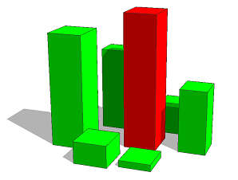

contextCompare function
target selector
| intra | Checks against labeled shapes in the same shape tree, that is, from the same initial shape. |
| inter | Checks against labeled shapes in other shape trees, that is, generated by other initial shapes in the neighborhood. |
| all | Checks both intra and inter. |
label string The context query is performed only on shapes that match the requested label. It must not be empty. If the label is empty, 0 is returned.
comparisonType selector
| world.northernmost | Ranks shapes by their northernmost bounds starting from the northernmost. |
| world.southernmost | Ranks shapes by their southernmost bounds starting from the southernmost. |
| world.easternmost | Ranks shapes by their easternmost bounds starting from the easternmost. |
| world.westernmost | Ranks shapes by their westernmost bounds starting from the westernmost. |
| world.highest | Ranks shapes by their highest bounds starting from the highest. |
| world.lowest | Ranks shapes by their lowest bounds starting from the lowest. |
| area.largest | Ranks shapes by their areas starting from the largest. |
| area.smallest | Ranks shapes by their areas starting from the smallest. |
Returns the rank of the current shape among all shapes that match the given label. The comparison is performed with respect to comparisonType. Ranks are 0-based. If several shapes share an equal comparison value, the lowest possible rank is returned. If no shape is found matching the specified label, 0 is returned.
A context query that returns the rank of the current shape geometry among other labeled shape geometries according to a specific comparator.
Related
Example

Lot --> extrude(rand(10)) label("label") Color
Color -->
case contextCompare(inter, "label", world.highest) == 0 :
color(1,0,0)
case contextCompare(inter, "label", world.lowest) == 0 :
color(0,1,0)
else :
color(0,0,1)
This example applies the Lot rule to a set of initial shapes, using inter context. Each lot is extruded by a random value and labeled with "label". The highest geometry is colored red. In the second case statement, all geometries share the lowest ranking, so the remaining geometries are colored green.